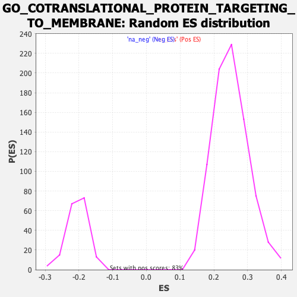

| | | Dataset | Recurrence |
| Phenotype | NoPhenotypeAvailable |
| Upregulated in class | na_neg |
| GeneSet | GO_COTRANSLATIONAL_PROTEIN_TARGETING_TO_MEMBRANE |
| Enrichment Score (ES) | -0.37448925 |
| Normalized Enrichment Score (NES) | -1.8240247 |
| Nominal p-value | 0.0 |
| FDR q-value | 0.27082357 |
| FWER p-Value | 0.991 |
Table: GSEA Results Summary
 Fig 1: Enrichment plot: GO_COTRANSLATIONAL_PROTEIN_TARGETING_TO_MEMBRANE
Fig 1: Enrichment plot: GO_COTRANSLATIONAL_PROTEIN_TARGETING_TO_MEMBRANE
Profile of the Running ES Score & Positions of GeneSet Members on the Rank Ordered List
| SYMBOL | RANK IN GENE LIST | RANK METRIC SCORE | RUNNING ES | CORE ENRICHMENT | | 1 | RPL17 | 1055 | 1.593 | -0.0203 | No |
| 2 | RPS4Y1 | 1952 | 1.279 | -0.0391 | No |
| 3 | SSR3 | 1963 | 1.277 | -0.0123 | No |
| 4 | SEC61A2 | 2970 | 1.055 | -0.0415 | No |
| 5 | RPS9 | 3071 | 1.037 | -0.0245 | No |
| 6 | TRAM1L1 | 3750 | 0.916 | -0.0399 | No |
| 7 | RPL5 | 5502 | 0.656 | -0.1160 | No |
| 8 | RPLP0 | 5962 | 0.599 | -0.1268 | No |
| 9 | SRP68 | 7041 | 0.464 | -0.1724 | No |
| 10 | RPS19 | 7264 | 0.439 | -0.1744 | No |
| 11 | RPS15 | 7500 | 0.413 | -0.1777 | No |
| 12 | RPL29 | 7798 | 0.376 | -0.1850 | No |
| 13 | RPL28 | 8438 | 0.306 | -0.2113 | No |
| 14 | RPL10 | 8609 | 0.291 | -0.2139 | No |
| 15 | TRAM1 | 8635 | 0.288 | -0.2090 | No |
| 16 | RPL10A | 8777 | 0.272 | -0.2104 | No |
| 17 | RPS27A | 9211 | 0.221 | -0.2280 | No |
| 18 | RPS25 | 9879 | 0.152 | -0.2591 | No |
| 19 | RPS2 | 9933 | 0.147 | -0.2587 | No |
| 20 | RPS7 | 10095 | 0.128 | -0.2642 | No |
| 21 | SRP9 | 10230 | 0.114 | -0.2687 | No |
| 22 | RPL15 | 10321 | 0.102 | -0.2711 | No |
| 23 | RPL39 | 10323 | 0.102 | -0.2690 | No |
| 24 | RPS3 | 10365 | 0.099 | -0.2690 | No |
| 25 | SRP72 | 11007 | 0.027 | -0.3014 | No |
| 26 | RPL36A | 11041 | 0.023 | -0.3026 | No |
| 27 | RPL18 | 11246 | -0.000 | -0.3131 | No |
| 28 | SEC61B | 11338 | -0.011 | -0.3176 | No |
| 29 | RPL35A | 11416 | -0.018 | -0.3212 | No |
| 30 | RPL12 | 11604 | -0.040 | -0.3299 | No |
| 31 | SEC63 | 11670 | -0.046 | -0.3323 | No |
| 32 | RPL4 | 11684 | -0.048 | -0.3319 | No |
| 33 | RPS16 | 11789 | -0.062 | -0.3360 | No |
| 34 | ZFAND2B | 12028 | -0.091 | -0.3463 | No |
| 35 | RPL18A | 12108 | -0.100 | -0.3482 | No |
| 36 | RPL27 | 12281 | -0.122 | -0.3545 | No |
| 37 | RPL41 | 12511 | -0.148 | -0.3631 | No |
| 38 | SEC61A1 | 12535 | -0.151 | -0.3610 | No |
| 39 | SRP19 | 12716 | -0.173 | -0.3666 | No |
| 40 | RPL27A | 12870 | -0.191 | -0.3704 | Yes |
| 41 | RPS24 | 12902 | -0.196 | -0.3678 | Yes |
| 42 | RPS28 | 12978 | -0.209 | -0.3672 | Yes |
| 43 | SEC62 | 12998 | -0.212 | -0.3637 | Yes |
| 44 | RPS3A | 13025 | -0.216 | -0.3604 | Yes |
| 45 | RPS21 | 13073 | -0.224 | -0.3580 | Yes |
| 46 | RPS15A | 13077 | -0.224 | -0.3534 | Yes |
| 47 | RPS13 | 13185 | -0.235 | -0.3539 | Yes |
| 48 | SRP54 | 13295 | -0.250 | -0.3541 | Yes |
| 49 | RPL3 | 13403 | -0.265 | -0.3540 | Yes |
| 50 | RPS18 | 13482 | -0.277 | -0.3521 | Yes |
| 51 | RPL13A | 13681 | -0.306 | -0.3557 | Yes |
| 52 | RPL21 | 13757 | -0.315 | -0.3529 | Yes |
| 53 | RPL35 | 13775 | -0.317 | -0.3470 | Yes |
| 54 | RPS11 | 13787 | -0.318 | -0.3407 | Yes |
| 55 | RPL30 | 13852 | -0.325 | -0.3371 | Yes |
| 56 | RPL8 | 14039 | -0.347 | -0.3392 | Yes |
| 57 | RPS8 | 14057 | -0.349 | -0.3327 | Yes |
| 58 | RPL14 | 14217 | -0.373 | -0.3329 | Yes |
| 59 | SRP14 | 14263 | -0.378 | -0.3271 | Yes |
| 60 | RPSA | 14468 | -0.405 | -0.3290 | Yes |
| 61 | RPL38 | 14634 | -0.426 | -0.3284 | Yes |
| 62 | RPL19 | 14722 | -0.438 | -0.3235 | Yes |
| 63 | RPL23A | 14952 | -0.472 | -0.3252 | Yes |
| 64 | SSR2 | 15011 | -0.480 | -0.3179 | Yes |
| 65 | RPS4X | 15016 | -0.481 | -0.3079 | Yes |
| 66 | RPL32 | 15140 | -0.498 | -0.3036 | Yes |
| 67 | RPL24 | 15167 | -0.502 | -0.2942 | Yes |
| 68 | RPS27 | 15183 | -0.505 | -0.2842 | Yes |
| 69 | RPS6 | 15345 | -0.530 | -0.2811 | Yes |
| 70 | RPS20 | 15353 | -0.532 | -0.2701 | Yes |
| 71 | RPS14 | 15527 | -0.557 | -0.2671 | Yes |
| 72 | RPL31 | 15574 | -0.567 | -0.2574 | Yes |
| 73 | RPLP2 | 15842 | -0.608 | -0.2581 | Yes |
| 74 | RPL11 | 15967 | -0.630 | -0.2511 | Yes |
| 75 | RPLP1 | 15979 | -0.632 | -0.2381 | Yes |
| 76 | RPS29 | 16016 | -0.638 | -0.2264 | Yes |
| 77 | RPL37A | 16037 | -0.640 | -0.2137 | Yes |
| 78 | RPL26 | 16135 | -0.653 | -0.2048 | Yes |
| 79 | TRAM2 | 16215 | -0.665 | -0.1946 | Yes |
| 80 | RPL37 | 16238 | -0.670 | -0.1814 | Yes |
| 81 | ARL6IP1 | 16290 | -0.679 | -0.1695 | Yes |
| 82 | RPS5 | 16420 | -0.702 | -0.1612 | Yes |
| 83 | RPL9 | 16570 | -0.729 | -0.1533 | Yes |
| 84 | RPS17 | 16656 | -0.745 | -0.1418 | Yes |
| 85 | RPS10 | 16661 | -0.746 | -0.1260 | Yes |
| 86 | UBA52 | 16774 | -0.770 | -0.1153 | Yes |
| 87 | RPL13 | 16804 | -0.776 | -0.1002 | Yes |
| 88 | RPS23 | 16875 | -0.792 | -0.0869 | Yes |
| 89 | RPL7A | 17087 | -0.838 | -0.0799 | Yes |
| 90 | SSR1 | 17145 | -0.850 | -0.0646 | Yes |
| 91 | RPL6 | 17289 | -0.887 | -0.0531 | Yes |
| 92 | RPL22 | 17740 | -0.995 | -0.0550 | Yes |
| 93 | RPL23 | 18206 | -1.143 | -0.0545 | Yes |
| 94 | RPL7 | 18290 | -1.173 | -0.0337 | Yes |
| 95 | RPL34 | 18302 | -1.177 | -0.0091 | Yes |
| 96 | RPS26 | 19158 | -1.679 | -0.0173 | Yes |
| 97 | RPS12 | 19170 | -1.688 | 0.0182 | Yes |
Table: GSEA details [plain text format]

Fig 2: GO_COTRANSLATIONAL_PROTEIN_TARGETING_TO_MEMBRANE: Random ES distribution
Gene set null distribution of ES for GO_COTRANSLATIONAL_PROTEIN_TARGETING_TO_MEMBRANE